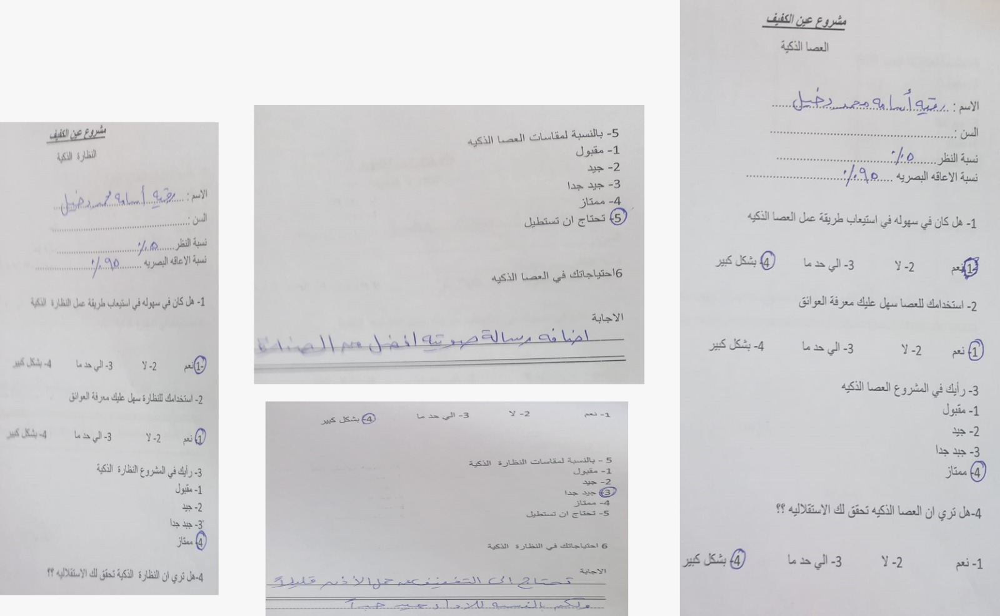

عين الكفيف الذكية - نتائج استطلاع الرأي
تم اجراء استطلاع رأي علي بعض المكفوفين لمعرفة ارائهم بعد تجربة مشروع عين الكفيف الذكية لمعرفة ارائهم في المنتج للعمل علي تحسينه حتي يلائم جميع المستخدمين .
وجاءت نتائج الأستطلاع كما يظهر في الصور التالية


لقد قمنا بعمل استطلاع رأي لمعرفة التعديلات والأضافات المطلوبة - الأستطلاع الورقي
https://docs.google.com/forms/d/e/1FAIpQLSc0_-r2e5N7p8CPPa9Uzw0rXyonNvUVdBooSzkcmTBHEIMo8A/viewform?usp=header
تم اجراء استطلاع رأي علي بعض المكفوفين لمعرفة ارائهم بعد تجربة مشروع عين الكفيف الذكية لمعرفة ارائهم في المنتج للعمل علي تحسينه حتي يلائم جميع المستخدمين .
وجاءت نتائج الأستطلاع كما يظهر في الصور التالية
للمزيد من المعلومات أو الدعم، يرجى التواصل عبر البريد الإلكتروني: info@smartblindeye.com